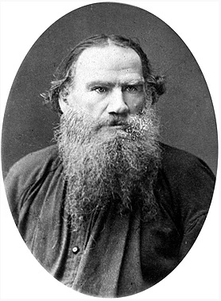

Толстой Лев Николаевич

Толстой, Лев Николаевич
Дата рождения 28 августа (9 сентября) 1828
Место рождения Ясная Поляна, Крапивенский уезд, Тульская губерния, Российская империя
Дата смерти 7 (20) ноября 1910 (82 года)
Место смерти станция Астапово, Раненбургский уезд, Рязанская губерния, Российская империя
Род деятельности прозаик, публицист, философ, писатель
Годы творчества 1847—1910
Направление реализм
Жанр рассказ, повесть, роман, драма
Язык произведений русский
Награды
Орден Святой Анны 4-й степени с надписью «За храбрость» Медаль «В память войны 1853—1856» Серебряная медаль «В память 50-летия защиты Севастополя»
Граф Лев Николаевич Толстой[К 1] (28 августа [9 сентября] 1828, Ясная Поляна, Тульская губерния, Российская империя — 7 [20] ноября 1910, станция Астапово, Рязанская губерния, Российская империя) — один из наиболее известных русских писателей и мыслителей, один из величайших писателей-романистов мира[4]. Участник обороны СевастополяПерейти к разделу «#Военная служба». Просветитель, публицист, религиозный мыслитель, его авторитетное мнение послужило причиной возникновения нового религиозно-нравственного течения — толстовстваПерейти к разделу «#Философия». За свои взгляды был отлучен от церкви. Член-корреспондент Императорской Академии наук (1873), почётный академик по разряду изящной словесности (1900)[5]. Был номинирован на Нобелевскую премию по литературе (1902, 1903, 1904, 1905). Впоследствии отказался от дальнейшей номинации.
Писатель, ещё при жизни признанный главой русской литературы[6]. Творчество Льва Толстого ознаменовало новый этап в русском и мировом реализме, выступив мостом между классическим романом XIX века и литературой XX века. Лев Толстой оказал сильное влияниеПерейти к разделу «#Значение и влияние творчества» на эволюцию европейского гуманизма, а также на развитие реалистических традиций в мировой литературе. Произведения Льва Толстого многократно экранизировались и инсценировались; его пьесы ставились на сценах всего мира[6]. Лев Толстой был самым издаваемым в СССР писателем за 1918—1986 годы: общий тираж 3199 изданий составил 436,261 млн экземпляров[7].
Наиболее известны такие произведения Толстого, как романы «Война и мир», «Анна Каренина», «Воскресение», автобиографическая[8][6] трилогия «Детство», «Отрочество», «Юность»[К 2], повести «Казаки», «Смерть Ивана Ильича», «Крейцерова соната», «Отец Сергий», «Хаджи-Мурат», цикл очерков «Севастопольские рассказы», драмы «Живой труп», «Плоды просвещения» и «Власть тьмы», автобиографические религиозно-философские произведения «Исповедь» и «В чём моя вера?» и др.
Дед Толстого по матери, екатерининский генерал князь Николай Сергеевич Волконский, имел некоторое сходство с суровым ригористом — старым князем Болконским в «Войне и мире»[10]. Мать Льва Николаевича, похожая в некоторых отношениях на изображённую в «Войне и мире» княжну Марью, владела замечательным даром рассказчицы.
Лев Толстой родился 28 августа 1828 года в Крапивенском уезде Тульской губернии, в наследственном имении матери — Ясной Поляне. Был четвёртым ребёнком в семье. Мать умерла в 1830 году от «родовой горячки», как тогда говорили, через полгода после рождения дочери, когда Льву не было ещё 2 лет[К 3].
Воспитанием осиротевших детей занялась дальняя родственница Т. А. Ергольская. В 1837 году семья переехала в Москву, поселившись на Плющихе, так как старшему сыну надо было готовиться к поступлению в университет. Вскоре внезапно умер отец, Николай Ильич, оставив дела (в том числе некоторые связанные с имуществом семьи тяжбы) в незаконченном состоянии, и трое младших детей снова поселились в Ясной Поляне под наблюдением Ергольской и тётки по отцу, графини А. И. Остен-Сакен, назначенной опекуншей детей. Здесь Лев Николаевич оставался до 1840 года, когда умерла Остен-Сакен, дети переселились в Казань, к новому опекуну — сестре отца П. И. Юшковой.
Дом Юшковых считался одним из самых весёлых в Казани; все члены семьи высоко ценили внешний блеск. «Добрая тётушка моя, — рассказывает Толстой, — чистейшее существо, всегда говорила, что она ничего не желала бы так для меня, как того, чтобы я имел связь с замужнею женщиною»[8].
Льву Николаевичу хотелось блистать в обществе, но ему мешали природная застенчивость и отсутствие внешней привлекательности. Разнообразнейшие, как их определяет сам Толстой, «умствования» о главнейших вопросах нашего бытия — счастье, смерти, Боге, любви, вечности — накладывали отпечаток на его характер в ту эпоху его жизни. Рассказанное им в «Отрочестве» и «Юности», в романе «Воскресение» о стремлениях Иртеньева и Нехлюдова к самоусовершенствованию взято Толстым из истории собственных его аскетических попыток этого времени. Всё это, писал критик С. А. Венгеров, привело к тому, что у Толстого создалась, по выражению из его повести «Отрочество», «привычка к постоянному моральному анализу, уничтожившая свежесть чувства и ясность рассудка»[8]. Приводя примеры самоанализа этого периода, он иронически отзывается о преувеличенности своего отроческого философского самолюбия и величия, и в то же время отмечает непреодолимую неспособность «привыкнуть не стыдиться за каждое своё самое простое слово и движение» при столкновении с реальными людьми, благодетелем которых он себе тогда казался. Образование
Дом, где родился Л. Н. Толстой, 1828 г. В 1854 году дом проигран писателем в карты, разобран и вывезен в село Долгое. Сломан в 1913 г.
Его образованием первоначально занимался гувернёр-француз Сен-Тома (прототип St.-Jerome в повести «Отрочество»), заменивший собою добродушного немца Ресельмана, которого Толстой изобразил в повести «Детство» под именем Карла Ивановича.
В 1843 году П. И. Юшкова, взяв на себя роль опекунши своих несовершеннолетних племянников (совершеннолетним был только старший — Николай) и племянницы, привезла их в Казань. Вслед за братьями Николаем, Дмитрием и Сергеем Лев решил поступить в Императорский Казанский университет (наиболее славившийся в то время), где работали на математическом факультете Лобачевский, а на Восточном — Ковалевский. 3 октября 1844 года Лев Толстой был зачислен студентом разряда восточной (арабско-турецкой) словесности в качестве своекоштного — оплачивающего своё обучение[11]. На вступительных экзаменах он, в частности, показал отличные результаты по обязательному для поступления «турецко-татарскому языку». По результатам года имел неуспеваемость по соответствующим предметам, не выдержал переходного экзамена и должен был заново пройти программу первого курса.
Во избежание полного повторения курса он перешёл на юридический факультет, где его проблемы с оценками по некоторым предметам продолжились. Переходные майские экзамены 1846 года были сданы удовлетворительно (получил одну пятёрку, три четвёрки и четыре тройки; средний вывод получился три), и Лев Николаевич был переведён на второй курс[12]. На юридическом факультете Лев Толстой пробыл менее двух лет: «Всегда ему было трудно всякое навязанное другими образование, и всему, чему он в жизни выучился, — он выучился сам, вдруг, быстро, усиленным трудом», — пишет С. А. Толстая в своих «Материалах к биографии Л. Н. Толстого»[13]. В 1904 году он вспоминал: «…я первый год … ничего не делал. На второй год я стал заниматься … там был профессор Мейер, который… дал мне работу — сравнение „Наказа“ Екатерины с Esprit des lois <«Духом законов»[fr]*> Монтескьё. … меня эта работа увлекла, я уехал в деревню, стал читать Монтескьё, это чтение открыло мне бесконечные горизонты; я стал читать Руссо и бросил университет, именно потому, что захотел заниматься»[14].